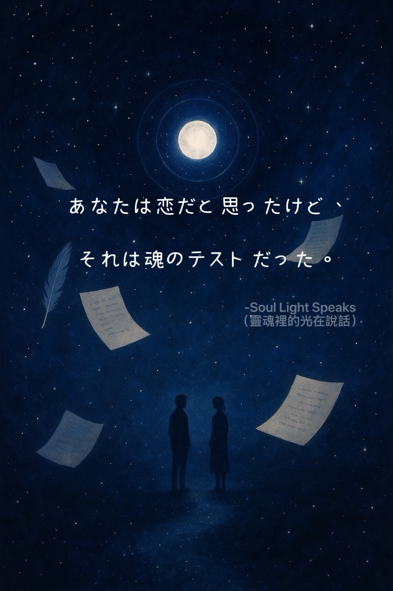
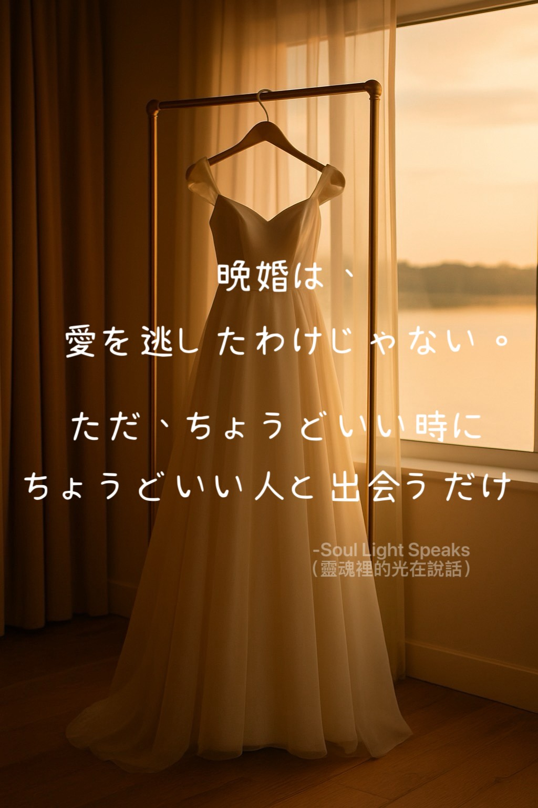
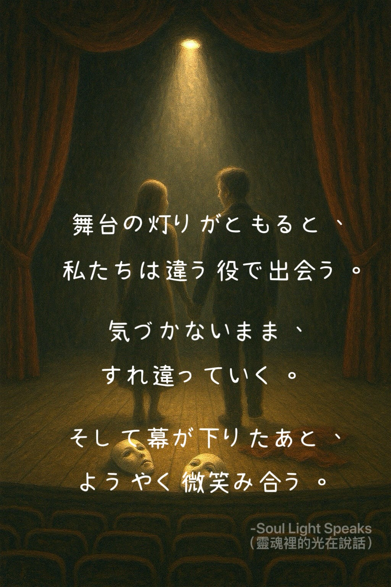

年月の中で、私たちは多くの人と静かに最後の別れを交わしてきた。一瞬でも心から出会えたことが、すでに祝福の瞬間。もし縁があれば、また会えるだろう。
行き交う人の中で、ふと目が合った。微笑んで、軽く手を振る。そしてそのまま、また人混みの中へと消えていった。
一晩だけでも、忘れられない人がいる。一生そばにいても、本当の意味で近づけない人もいる。私たちは皆、いつかどこかで、お互いの人生を旅する旅人だった。
その出会いは留まるためではなく、ただ、人生の一部を照らすためにあった。その光は夜に属し、記憶に残る。静かで届かないその光は、決して消えない。

あなたは恋だと思ったけど、それは魂のテストだった。
課題は、共にいる中で現れることもあれば、失ってから気づくこともある。どんな時でも、その修行はもう終わっている。

晩婚は、愛を逃したわけじゃない。ただ、ちょうどいい時にちょうどいい人と出会うだけ。

舞台の灯りがともると、私たちは違う役で出会う。気づかないまま、すれ違っていく。そして幕が下りたあと、ようやく微笑み合う。
一番あなたを愛してくれた人は、もうこの世にいない。
葬儀のときまで待たずに 愛を 届けて。
子どもの頃、約束を破られるのは嫌だった。大人になると、約束を守れないこともある。避けられない大人の選択。
本当の安定とはそれぞれが役割を果たすことではない。誰かが倒れても他の誰かが全体を支えられることだ。